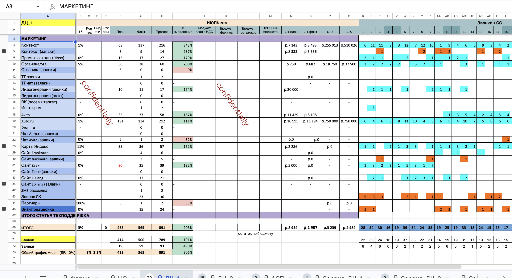
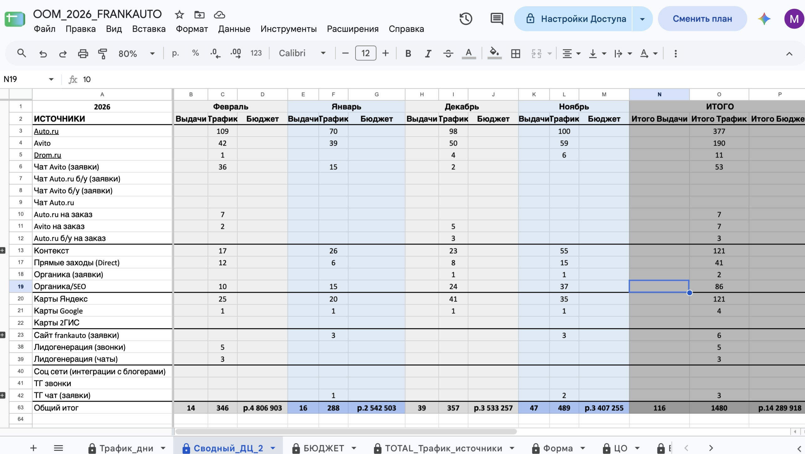
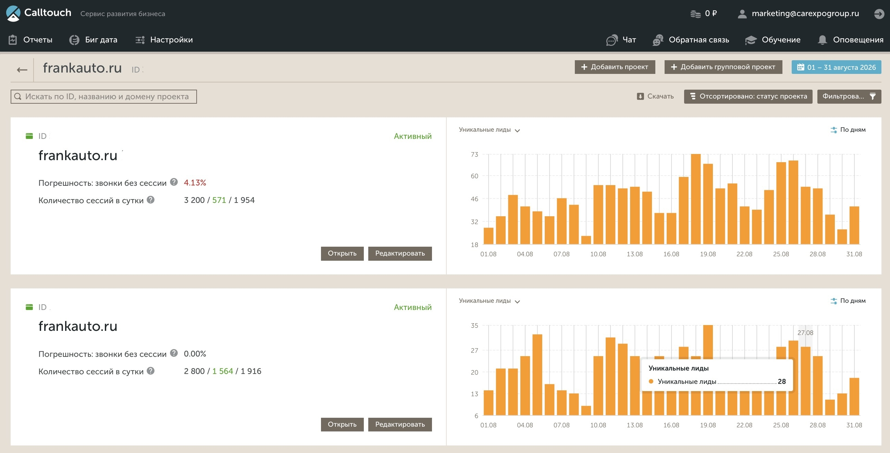
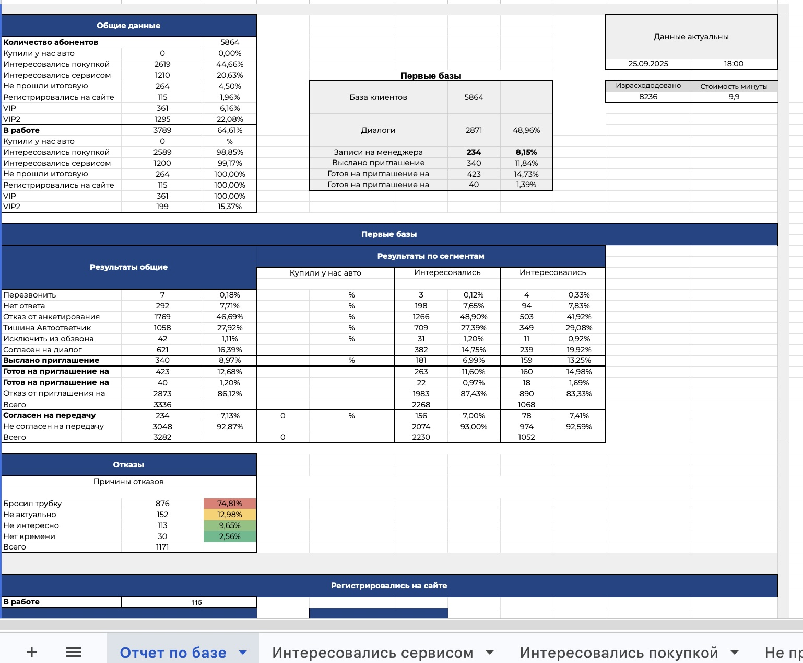
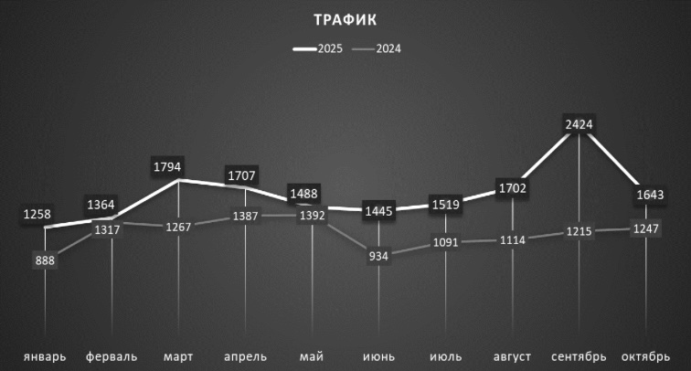

От рекламных расходов - к управляемому маркетингу
Как связать маркетинг, обращения и продажи в единую систему принятия решений.
Инициировала внедрение сквозной аналитики и выстроила связку Calltouch, Bitrix24 и Smartis, чтобы видеть путь клиента от первого обращения до коммерческого результата и оценивать эффективность каналов на основе данных.
Стоимость привлечения клиента (CAC)
Результат комплексной работы с рекламными каналами, конверсией сайта и обработкой обращений.
Понять, какие каналы действительно приводят к результату
Задача была не только в том, чтобы объединить данные. Нужно было последовательно снижать стоимость привлечения: улучшать формы обратной связи и посадочные страницы, пересматривать эффективность рекламных каналов, отключать дорогие источники с низкой отдачей и развивать партнёрский маркетинг.
Разная отдача каналов
Нужно было видеть распределение обращений по источникам и оценивать не только объём трафика, но и его коммерческую отдачу.
Конверсия на каждом этапе
На стоимость привлечения влияли не только рекламные ставки, но и формы обратной связи, посадочные страницы и дальнейшая обработка заявок.
Необходимость оптимизации
Требовалось перераспределять бюджет в пользу источников с лучшей отдачей и развивать дополнительные каналы привлечения, включая партнёрства.
Соединить источники, CRM и коммерческие данные
Вместо разрозненных отчётов был выстроен контур, в котором информация последовательно проходит от обращения к его обработке и аналитике.
Источники
Рекламные каналы и входящие обращения
Calltouch
Звонки, распознавание речи, теги и контроль пропусков
Bitrix24
Фиксация лидов, поля, этапы и дисциплина обработки
Smartis
Сведение данных и автоматизация аналитической отчётности
Изменить не только инструменты, но и правила работы
Снижение стоимости привлечения складывалось из нескольких направлений: улучшения конверсии сайта, оптимизации медиамикса, развития партнёрского маркетинга и более точного измерения результата.
Формы обратной связи и посадочные страницы
Работала над точками конверсии между рекламным переходом и обращением в отдел продаж.
- Улучшение форм обратной связи (ФОС).
- Доработка посадочных страниц под задачи рекламных каналов.
- Снижение потерь потенциальных клиентов на пути к обращению.
Оптимизация медиамикса
Регулярно оценивала распределение трафика и его результативность, чтобы бюджет работал эффективнее.
- Отключение дорогих источников с низкой отдачей.
- Перераспределение внимания и бюджета между каналами.
- Сопоставление объёма трафика с обращениями и коммерческими результатами.
Развитие дополнительных источников
Развивала партнёрский маркетинг как дополнительное направление привлечения потенциальных клиентов.
- Работа с партнёрскими источниками и рекомендациями.
- Расширение структуры каналов привлечения.
- Оценка вклада источников в общий поток обращений.
Связь источников с результатом
Выстраивала систему измерения, чтобы решения по каналам опирались не только на клики и стоимость трафика.
- Calltouch - звонки, теги и контроль пропущенных обращений.
- Bitrix24 - фиксация и обработка лидов.
- Smartis и данные 1С - аналитика и связь с коммерческими событиями.
Отдельный показатель - и системные изменения
Главный количественный результат - снижение CAC. Не менее важным итогом стало повышение прозрачности маркетинга и создание основы для регулярных решений на данных.
Стоимость привлечения клиента
Итог комплексной оптимизации: работа с рекламными каналами, конверсией посадочных страниц, формами обратной связи и дополнительными источниками привлечения.
Каналы
Распределение и отдача
Отчётность показывала динамику трафика и вклад разных источников, помогая принимать решения по медиамиксу.
CRO
Работа с конверсией
Улучшения форм обратной связи и посадочных страниц дополняли оптимизацию рекламных расходов.
От диагностики до управленческого контура
Мой вклад заключался не только в выборе инструментов. Я инициировала внедрение аналитики, определяла логику связки систем и организовала изменения, необходимые для более полной фиксации и оценки клиентского пути.
Диагностика
Выявление потерь данных и проблем ручного сбора отчётности.
Архитектура
Определение логики связки Calltouch, Bitrix24, Smartis и данных 1С.
Изменение процессов
Правила фиксации обращений, контроль звонков и отчётность.
Ориентация на результат
Переход к оценке маркетинга через стоимость привлечения и коммерческие данные.
Не просто отчёты - рабочая система
Фрагменты аналитики и CRM показывают, как данные об источниках, звонках и дальнейших действиях собирались в единую картину. Часть информации скрыта в соответствии с NDA.




